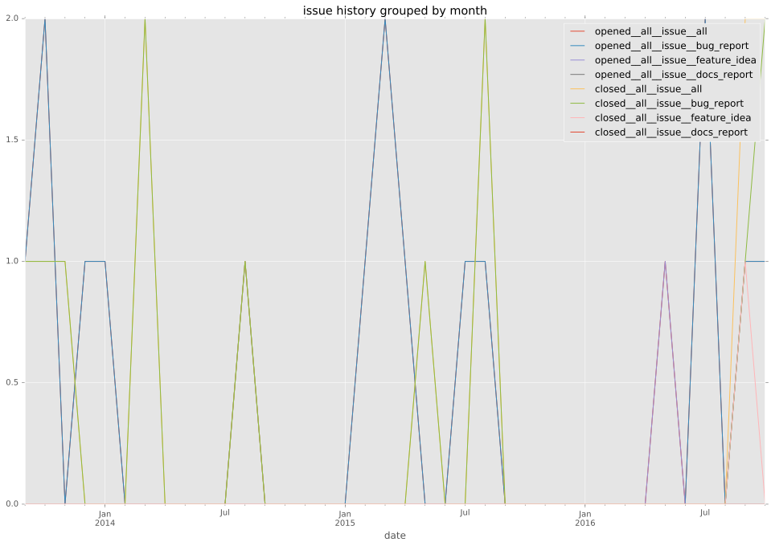

authors
- hacosta
maintainers
- hacosta
contributors
- hacosta : 20 commits
- jimi-c : 5 commits
- zakkie : 3 commits
- mpdehaan : 3 commits
- bcoca : 3 commits
- abadger : 2 commits
- mscherer : 1 commits
- jctanner : 1 commits
- gundalow : 1 commits
- aresch : 1 commits
- Jmainguy : 1 commits
- AdmiralNemo : 1 commits
total issue counts
feature pull request: 3
pullrequest: 18
bugfix pull request: 15
feature idea: 2
issue: 17
bug report: 15
issue history

pullrequest history
days open by issue type
bugfix pull request
count: 22
std: 38.0409041639
min: 0
max: 131
median: 0.5
mean: 14.5909090909
all
count: 39
std: 92.8010656554
min: 0
max: 547
median: 2.0
mean: 35.4102564103
pullrequest
count: 0
std: nan
min: nan
max: nan
median: nan
mean: nan
feature pull request
count: 4
std: 6.89806736219
min: 0
max: 15
median: 2.0
mean: 4.75
feature idea
count: 1
std: nan
min: 119
max: 119
median: 119.0
mean: 119.0
issue
count: 0
std: nan
min: nan
max: nan
median: nan
mean: nan
bug report
count: 12
std: 152.509810911
min: 0
max: 547
median: 22.0
mean: 76.8333333333
closures grouped by total days open